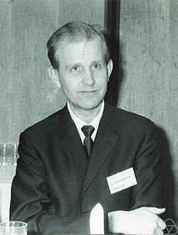

This article needs more citations. (February 2013) |
Lars Hörmander | |
|---|---|
 Hörmander in 1969 | |
| Born | Lars Valter Hörmander 24 January 1931 |
| Died | 25 November 2012 (aged 81) |
| Alma mater | Lund University |
| Known for | Theory of linear partial differential equations, hyperbolic partial differential operators, the development of pseudo-differential operators and Fourier integral operators as fundamental tools |
| Awards | Leroy P. Steele Prize (2006) Wolf Prize (1988) Fields Medal (1962) |
| Scientific career | |
| Fields | Mathematics |
| Institutions | Stockholm University Stanford University Institute for Advanced Study Lund University |
| Thesis | On the theory of general partial differential operators (1955) |
| Marcel Riesz Lars Gårding | |
Doctoral students | Germund Dahlquist Nils Dencker |
{kind=link}
Lars Valter Hörmander (24 January 1931 – 25 November 2012) was a Swedish mathematician who has been called "the foremost contributor to the modern theory of linear partial differential equations".[1] Hörmander was awarded the Fields Medal in 1962 and the Wolf Prize in 1988. In 2006 he was awarded the Steele Prize for Mathematical Exposition for his four-volume textbook Analysis of Linear Partial Differential Operators, which is considered a foundational work on the subject.[2]
Hörmander completed his Ph.D. in 1955 at Lund University. Hörmander then worked at Stockholm University, at Stanford University, and at the Institute for Advanced Study in Princeton, New Jersey. He returned to Lund University as a professor from 1968 until 1996, when he retired with the title of professor emeritus.
Biography
Education
Hörmander was born in Mjällby, a village in Blekinge in southern Sweden where his father was a teacher. Like his older brothers and sisters before him, he attended the realskola (secondary school), in a nearby town to which he commuted by train, and the gymnasium (high school) in Lund from which he graduated in 1948.
At the time when he entered the gymnasium, the principal had instituted an experiment of reducing the period of the education from three to two years, and the daily activities to three hours. This freedom to work on his own, "[greater] than the universities offer in Sweden today", suited Hörmander "very well". He was also positively influenced by his enthusiastic mathematics teacher, a docent at Lund University who encouraged him to study university-level mathematics.
After proceeding to receive a Master's degree from Lund University in 1950, Hörmander began his graduate studies under Marcel Riesz (who had also been the advisor for Hörmander's gymnasium teacher). He made his first research attempts in classical function theory and harmonic analysis, which "did not amount to much" but were "an excellent preparation for working in the theory of partial differential equations." He turned to partial differential equations when Riesz retired and Lars Gårding who worked actively in that area was appointed professor.
Hörmander took a one-year break for military service from 1953 to 1954, but due to his position in defense research was able to proceed with his studies even during that time. His Ph.D. thesis On the theory of general partial differential operators was finished in 1955, inspired by the nearly concurrent Ph.D. work of Bernard Malgrange and techniques for hyperbolic differential operators developed by Lars Gårding and Jean Leray.
Fields Medal and years in the U.S.
Hörmander applied for a professorship at Stockholm University, but temporarily left for the United States while the request was examined. He spent quarters from winter to fall in respective order at the University of Chicago, the University of Kansas, the University of Minnesota, and finally at the Courant Institute of Mathematical Sciences in New York City. These locations offered "much to learn" in partial differential equations, with the exception of Chicago of which he however notes the Antoni Zygmund seminar held by Elias Stein and Guido Weiss to have strengthened his familiarity with harmonic analysis.
In the theory of linear differential operators, "many people have contributed but the deepest and most significant results are due to Hörmander", according to Hörmander's doctoral advisor, Lars Gårding.[2] Hörmander won the Fields Medal in 1962.[3]
Hörmander was given a position as a part-time professor at Stanford in 1963 but was soon thereafter offered a professorship at the Institute for Advanced Study in Princeton, New Jersey. He first wished not to leave Sweden but attempts to find a research professorship in Sweden failed and "the opportunity to do research full time in a mathematically very active environment was hard to resist", so he accepted the offer and resigned from both Stanford and Stockholm and began at the Institute in the fall of 1964. Within two years of "hard work", he felt that the environment at the institute was too demanding, and in 1967 decided to return to Lund after one year. He later noted that his best work at the institute was done during the remaining year.
Later years
Hörmander mostly remained at Lund University as a professor after 1968 but made several visits to the United States during the two next decades. He visited the Courant Institute in 1970, and also the Institute for Advanced Study in 1971 and during the academic year, 1977–1978 when a special year in microlocal analysis was held. He also visited Stanford in 1971, 1977, and 1982, and the University of California, San Diego in winter 1990. Hörmander was briefly director of the Mittag-Leffler Institute in Stockholm between 1984 and 1986 but only accepted a two-year appointment as he "suspected that the administrative duties would not agree well" with him, and found that "the hunch was right". He also served as vice president of the International Mathematical Union between 1987 and 1990. Hörmander retired emeritus in Lund in January 1996. In 2006 he was honored with the Steele Prize for Mathematical Exposition from the American Mathematical Society.
He was made a member of the Royal Swedish Academy of Sciences in 1968. In 1970 he gave a plenary address (Linear Differential Operators) at the ICM in Nice.
He received the 1988 Wolf Prize "for fundamental work in modern analysis, in particular, the application of pseudo differential and Fourier integral operators to linear partial differential equations".[3]
In 2012 he was selected as a fellow of the American Mathematical Society, but died on 25 November 2012,[4] before the list of fellows was released.[5]
Important publications
His book Linear Partial Differential Operators, which largely was the cause for his Fields Medal, has been described as "the first major account of this theory". It was published by Springer-Verlag in 1963 as part of the Grundlehren series. In the U.S., this book is now in the public domain and reprints are available under ISBN 978-1014977045.
Hörmander devoted five years to compiling the four-volume monograph, The Analysis of Linear Partial Differential Operators, first published between 1983 and 1985. A follow-up of his Linear Partial Differential Operators, "illustrate[d] the vast expansion of the subject"[4] over the past 20 years, and is considered the "standard of the field".[5] In addition to these works, he has written a recognised introduction to several complex variables based on his 1964 Stanford lectures, and wrote the entries on differential equations in Nationalencyklopedin.
- Hörmander, Lars (2012) [1963], Linear Partial Differential Operators (Softcover reprint of the original 1st ed.), Springer-Verlag, doi:10.1007/978-3-642-46175-0, ISBN 978-3-642-46177-4
- The Analysis of Linear Partial Differential Operators I: Distribution Theory and Fourier Analysis, Springer-Verlag, 2009 [1983], ISBN 978-3-540-00662-6[6][7]
- The Analysis of Linear Partial Differential Operators II: Differential Operators with Constant Coefficients, Springer-Verlag, 2004 [1983], ISBN 978-3-540-22516-4[6][7]
- The Analysis of Linear Partial Differential Operators III: Pseudo-Differential Operators, Springer-Verlag, 2007 [1985], ISBN 978-3-540-49937-4[8][9]
- The Analysis of Linear Partial Differential Operators IV: Fourier Integral Operators, Springer-Verlag, 2009 [1985], ISBN 978-3-642-00117-8[8][9]
- An Introduction to Complex Analysis in Several Variables (3rd ed.), North Holland, 1990 [1966], ISBN 978-1-493-30273-4
- Notions of Convexity, Birkhäuser Verlag, 2006 [1994], ISBN 978-0-8176-4584-7[10]
- Lectures on Nonlinear Hyperbolic Differential Equations, Springer-Verlag, 2003 [1987], ISBN 978-3-540-62921-4
See also
Notes
- ^ Wolf Foundation. The 1988 Wolf Foundation Prize In Mathematics. Retrieved September 20, 2005. [6]
- ^ L. Gårding. Hörmander's work on linear differential operators. Proceedings of the International Congress of Mathematicians. Stockholm, 1962 (Stockholm, 1963). As quoted by O'Connor & Robertson.
- ^ Wolf Foundation.
- ^ Unknown. "About the Author". Amazon.com entry for The Analysis of Linear Partial Differential Operators I. Retrieved September 20, 2005 [7]
- ^ Wolf Foundation.
References
- ^ Hormander biography – University of St Andrews
- ^ Lars Hörmander Receives 2006 AMS Steele Prize for Mathematical Exposition. American Mathematical Society.
- ^ "Fields Medals 1962". International Mathematical Union. Retrieved 2019-07-29.
- ^ "In Memoriam of Lars Hörmander". University of Lund. Archived from the original on 2014-01-10. Retrieved 2013-06-09.
- ^ List of Fellows of the American Mathematical Society, retrieved 2013-01-21.
- ^ a b Taylor, Michael E. (1985), "Book Review of The Analysis of Linear Partial Differential Operators, Vols I & II", Amer. Math. Monthly, 92 (10): 745–749, doi:10.2307/2323245, JSTOR 2323245
- ^ a b Trèves, François (1984), "Review: The Analysis of Linear Partial Differential Operators, Vols. I & II, by Lars Hörmander", Bull. Amer. Math. Soc. (N.S.), 10 (2): 337–340, doi:10.1090/s0273-0979-1984-15276-5
- ^ a b Boutet de Monvel, Louis (1987), "Review: The Analysis of Linear Partial Differential Operators, Vols. III & IV, by Lars Hörmander", Bull. Amer. Math. Soc. (N.S.), 16 (1): 161–167, doi:10.1090/s0273-0979-1987-15500-5
- ^ a b Wilcox, Calvin H. (1986), "Review: The Analysis of Linear Partial Differential Operators, Vols. III & IV, by Lars Hörmander", SIAM Review, 28 (2): 285–287, doi:10.1137/1028098
- ^ Kawai, Takahiro (1995), "Review: Notions of convexity, by Lars Hörmander" (PDF), Bull. Amer. Math. Soc. (N.S.), 32 (4): 429–431, doi:10.1090/s0273-0979-1995-00608-7
Bibliography
- Hörmander, Lars. Autobiography. Fields Medallists' Lectures. M. Sir Michael Atiyah & D. Iagolnitzer (editors). World Scientific. ISBN 981-238-259-3
- J. J. O'Connor & E. F. Robertson. Lars Hörmander. MacTutor archive biography. Retrieved September 20, 2005
External links
- Boman, Jan; Sigurdsson, Ragnar (August 2015), "To the Memory of Lars Hörmander (1931–2012)", Notices of the American Mathematical Society, 62 (8): 890–907, doi:10.1090/noti1274
- Lars Hörmander @Lund University Publications (Filter by publication with full text)
- Seminar Notes on Pseudo-Differential Operators and Boundary Problems (1966)
- Fourier Integral Operators Lectures at the Nordic Summer School of Mathematics (1969)
- Linear Functional Analysis Lectures Fall Term 1988 (1989)
- Riemannian Geometry : Lectures given during the fall of 1990 (1990)
- Advanced differential calculus (1994)
- Lectures on Harmonic Analysis (1995)